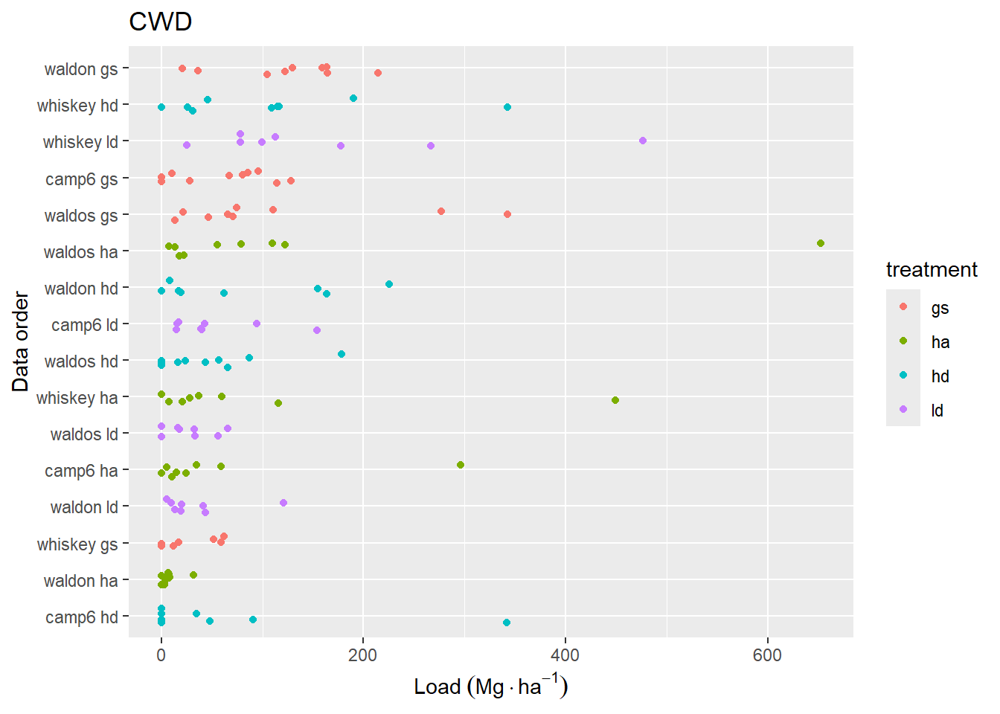
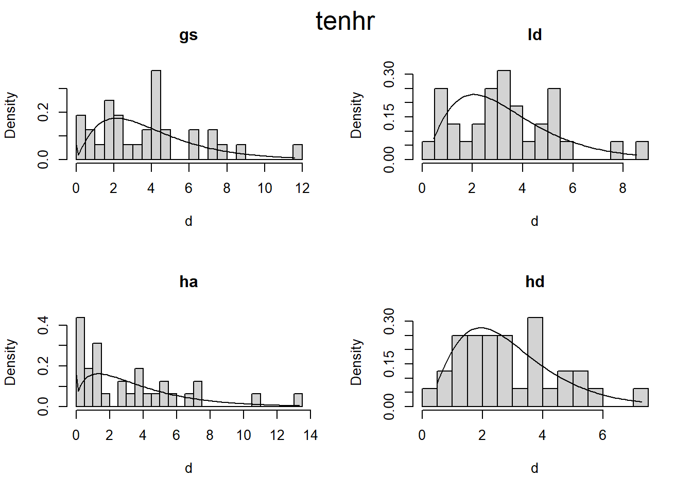
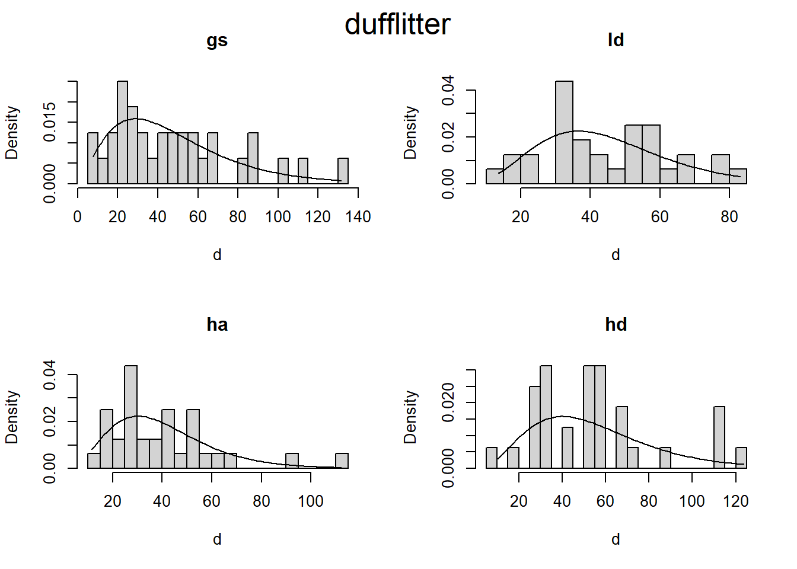
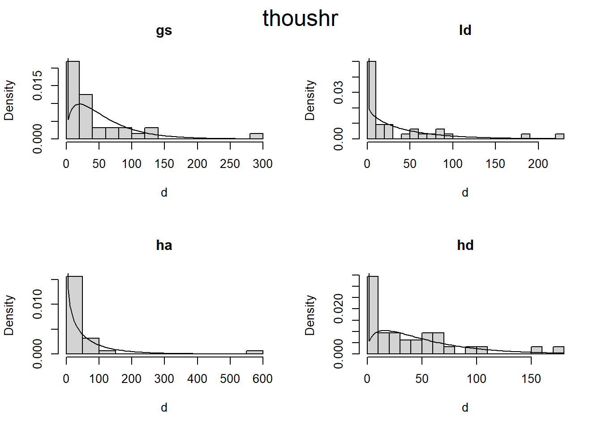

Are there differences in fuel loading between treatments?
If so, what fuel loading components differ, and in which treatments?
What is the magnitude of the difference (for each fuel class) by treatment?
We have a range of response variables that include loading in several different classes of surface fuels. Some of these may be correlated with each other, which may have an effect on our interpretation of differences between treatments. For instance, if duff-litter load is negatively correlated with vegetation, even if we don’t see differences between treatment in either of these variables separately, it might be found that for any given level of vegetation loading, one treatment, or another may have consistently higher levels of duff-litter. Capturing differences between treatments in terms of interactions like these requires different tools than assessing any one variable on its own.
In order to assess potential outliers, co-linearity, interactions, and other problems with statistical tests, we’ll first conduct some data exploration as outlined by Zuur, Ieno, and Elphick (2010).
For reference, here is a list of the fuel loading (response) variables of interest.
duff/litter load
woody vegetation
herbaceous vegetation
one hr fuels
ten hr fuels
hundred hr fuels
coarse woody debris
It’s important to note that variables 1-3 were measured twice per transect and the rest were measured once per transect. All analysese were conducted at the transect level–variables 1-3 were analyzed at their transect average (average of two observations per transect.) This was done to simplify the analysis.
3.1 Basic Summary
Code
# function to access mostly raw data, but with combined veg and thoushr fuels.# and select the output variables (`...`)load2 <-function(shape ="wide", ...) { load_vars <-c("onehr", "tenhr", "hundhr", "dufflitter", "thoushr", "veg") tl <-pivot_wider(total_load, names_from = class, values_from = load) |>mutate(thoushr =rowSums(pick(c(thoushr_s, thoushr_r)), na.rm =TRUE),veg =rowSums(pick(c(woody, herb)), na.rm =TRUE),.keep ="unused" )if (!missing(...)) tl <-select(tl, ...)if (shape =="long") { tl <-pivot_longer(tl,-any_of(c("site", "treatment", "corner", "azi")),names_to ="class",values_to ="load" ) load_vars <- load_vars[load_vars %in% tl$class] tl <-mutate(tl, class =factor(class, levels = load_vars)) } tl}
load2("long", everything()) |>filter(!(load >190& class =="veg"| load >400& class =="thoushr")) |>ggplot(aes(treatment, load)) +geom_boxplot() +facet_wrap(~class, scales ="free")
Figure 3.1: Two outliers were removed to aide in interpretability–600 and 199 t/ha in ha-thoushr and gs-veg, respectively.
Figure 3.2: Data distribution of loading for fine woody debris classes. Data are sorted by mean loading within each replicate. Jitter has been added to aid in visual interpretation.

Figure 3.3: Sum of coarse woody (>7.64 cm, sound and rotten wood combined) fuel loading for transects. The y-axis is sorted by mean CWD loading for each replicate.
Figure 3.4: Combined duff and litter loading at each station along trancects. Y-axis is sorted as in Figure 3.3.
Figure 3.5: Vegetation fuel loading for each station along transects, including live and dead fuels attached to live vegetation. Y-axis is sorted as in Figure 3.3.
3.3 Normality
For further testing, I will summarize the data somewhat, by combining vegetation loading (woody and herb), and coarse woody loading (sound and rotten) into just two loading metrics. Now we have the following response variables:
dufflitter
onehr
tenhr
hundhr
thoushr
veg
When using manova to test for difference between groups with multiple response variables, it is important that the response variables are multivariate normally distributed. Unfortunately, it would appear that we have a probelem with normality. The raw data for each loading variable is clearly not normally distributed Figure 3.6.
myqqplot <-function(data, var) { data |>ggplot(aes(sample = {{ var }})) +stat_qq() +stat_qq_line() +facet_grid(class ~ treatment, scales ="free") +labs(x ="Theoretical quantiles", y ="Sample quantiles",title ="Normal Q-Q Plot" )}load2("long", treatment, all_of(load_vars)) |>myqqplot(load)
Figure 3.6: Naive qq plot of loading variables. This doesn’t take into the fact that our data is nested. You could say this is based on a simple model where all observations are independent.
# This code creates a dataframe with nested columns that include the original# data and calculated coordinates of a superimposed normal distribution.bins <-16hist_dat <-load2("long", treatment, all_of(load_vars)) |>drop_na() |># Facet grid each column (class) has same scale, find limits to calculate bin# width, limits are either implied by the constructed normal curce, or the raw# datagroup_by(class) |>mutate(xmin =min(c(mean(load) -3*sd(load), load)),xmax =max(c(mean(load) +3*sd(load), load)) ) |>group_by(treatment, class) |>nest(data = load) |># generate data for a normal curve with mean and sd from observed data to# cover 3 sd.mutate(norm_x =map(data, function (d) {seq(from =mean(d$load) -3*sd(d$load), to =mean(d$load) +3*sd(d$load), length.out =100 ) }),# scale curve to expected binwidth based on plot layout (same x scale across# all fuel classes) multiplied by the number of observations. The histogram# and normal curve should represent the same total area.norm_y =map(data, function (d) { dens <-dnorm(unlist(norm_x), mean =mean(d$load), sd =sd(d$load)) dens * ((xmax - xmin) / bins) *nrow(d) }) )# # here is the code to plot the above data. I decided not to use this after all,# # but it was a lot of work, so I'm keeping it for posterity# ggplot(filter(hist_dat, class %in% load_vars[1:3] )) +# geom_histogram(data = \(x) unnest(x, data), aes(x = load), bins = bins) +# geom_line(data = \(x) unnest(x, c(norm_x, norm_y)), aes(norm_x, norm_y)) +# facet_grid(treatment ~ class, scales = "free") +# labs(y = "count", x = "Load Mg/ha")## ggplot(filter(hist_dat, class %in% load_vars[4:6] )) +# geom_histogram(data = \(x) unnest(x, data), aes(x = load), bins = bins) +# geom_line(data = \(x) unnest(x, c(norm_x, norm_y)), aes(norm_x, norm_y)) +# facet_grid(treatment ~ class, scales = "free") +# labs(y = "count", x = "Load Mg/ha")
While, this looks somewhat more normal, the zeros end up being a little strange. I applied a separte transformation for each fuel class, but all treatments within a fuel class have the same transformation.
For MANOVA we are concered with the within group multivariate normality, the assumption does not appear to be met here either (Figure 3.8). The code output below indicates the rows with the greatest deviation from normal.
Table 3.2: Several different tests of multivariate normality indicate a lack of evidence to support this assumption.
treatment
Test
statistic
p value
Result
gs
Mardia Skewness
156.2386
0.0000
NO
gs
Mardia Kurtosis
4.1306
0.0000
NO
ha
Mardia Skewness
198.9055
0.0000
NO
ha
Mardia Kurtosis
5.8903
0.0000
NO
hd
Mardia Skewness
85.1671
0.0072
NO
hd
Mardia Kurtosis
0.7268
0.4673
YES
ld
Mardia Skewness
122.0012
0.0000
NO
ld
Mardia Kurtosis
3.2534
0.0011
NO
gs
Henze-Zirkler
1.1979
0.0000
NO
ha
Henze-Zirkler
1.2792
0.0000
NO
hd
Henze-Zirkler
1.0978
0.0001
NO
ld
Henze-Zirkler
1.1036
0.0001
NO
gs
Royston
79.7755
0.0000
NO
ha
Royston
105.5921
0.0000
NO
hd
Royston
51.6106
0.0000
NO
ld
Royston
65.9480
0.0000
NO
gs
Doornik-Hansen
45.8165
0.0000
NO
ha
Doornik-Hansen
57.3566
0.0000
NO
hd
Doornik-Hansen
65.4678
0.0000
NO
ld
Doornik-Hansen
38.4513
0.0001
NO
gs
E-statistic
1.9038
0.0000
NO
ha
E-statistic
2.1409
0.0000
NO
hd
E-statistic
1.6312
0.0000
NO
ld
E-statistic
1.7881
0.0000
NO
3.3.2 Other distributions
If our data is not normally distributed, then what distribution is it? I’m going to assume what we are interested in the distribution of data within groups (treatments).
I attemped to model the distribution of our conditional response data (fuel size class by treatment), but it mostly didn’t work.
Our data is non-negative (contains zeros) continuous (for the most part) and highly variable in terms of skew and kurtosis. The presence of zeros, makes using the Gamma distribution more difficult. One possibility is a hurdle gamma, or Zero-adjusted Gamma.
The following show where our data lies in terms of kurtosis and skewness compared to other common distributions. It looks somewhat Gamma-ish?
Figure 3.9: Skewness and kurtosis for fuel classes within treatments.
3.3.3 Zero-adjusted Gamma
I’ll try using the gamlss package, which fits models “where all the parameters of the assumed distribution for the response can be modelled as additive functions of the explanatory variables.”
I’m not really sure how it works, but I know if will allow me to fit a model assuming a gamma distribution, while modeling the zeros separately. First I fit a model, then I get the estimated distribution parameters, then I plot the density curve over a histrogram (scaled to density). This looks promising to me.
# Zero adjusted Gamma distribution fit to histogramsplot_zaga <-function(i, d) { m1 <- gamlss::gamlssML(d, family = gamlss.dist::ZAGA())hist(d, prob =TRUE, main = i, breaks =20)curve(gamlss.dist::dZAGA(x, mu = m1$mu, sigma = m1$sigma, nu = m1$nu), from =min(d), to =max(d), add =TRUE)}plot_zaga_class <-function(data, class_name) {if(missing(class_name)) { class_name <-as.character(substitute(data)) class_name <- class_name[length(class_name)] }par(mfrow =c(2,2))iwalk(data, ~plot_zaga(.y, .x))mtext(class_name, cex =1.6, side =3, line =-2, outer =TRUE)}d2 <- d |>map(~map(.x, "load"))iwalk(d2, ~plot_zaga_class(.x, .y))



3.3.4 Poisson fit of count data
All of the woody debris can be viewed as count data, and mean diameter. The mean diameter implies a distribution, which we actually have for coarse woody, but not for FWD.
I wonder If I can model these counts as a Poisson process.
cwd_counts <- cwd |>group_by(site, treatment, corner, azi) |>summarize(count =sum(count), .groups ="drop")par(mfrow =c(2,2))cwd_counts |>group_by(treatment) |>group_walk( function (data, group) { n <- data$counthist(n, main = group, prob =TRUE)lines(0:max(n), dpois(0:max(n), mean(n))) })
That didn’t look so great, so I also tried using a Zero-inflated Poisson distribution, but the model fit an extremely small value for the parameter that controls the probability of zero (referred to here as sigma) and so was effectively the same as the Poisson fit.
# A tibble: 4 × 2
# Groups: treatment [4]
treatment sigma
<chr> <dbl>
1 gs 2.61e-10
2 ha 1.61e-10
3 hd 2.42e-10
4 ld 2.71e-10
3.4 Homogeneity of variance
There seem to be some pretty big differences in the variance between treatments. This is likely to do with outliers. For linear regression, it is recommended that maximum variance ration should be below 4.
I’m not sure if it’s important, but I was curious if the various fuel loading classes were correlated with each other. Either across the board, or within a given treatment.
Figure 3.10: Correlation among the response variables (fuel classes).
3.7 Independence
Because of how are data were collected they are not independent. The current data is summarized at the transect level. At that level. We have two transects at each corner. Because of spatial autocorrelation, these may be correlated with each other. Corners (and thus transects) are nested within plots, and plots are within treatments. Each plot received a different treatment. What I’m not clear about is: should I include a random variable for plots, if I’m including a fixed effect for treatment?
There are also question about at what level to summarize/model the data. I’ve already averaged stations within transects for several variable that were collected at the station level (two within each transect). What are the trade-offs for either averaging at the corner level, or alternatively, analyzing our raw station data instead of averaging.
Zuur, Alain F., Elena N. Ieno, and Chris S. Elphick. 2010. “A Protocol for Data Exploration to Avoid Common Statistical Problems.”Methods in Ecology and Evolution 1 (1): 3–14. https://doi.org/10.1111/j.2041-210X.2009.00001.x.